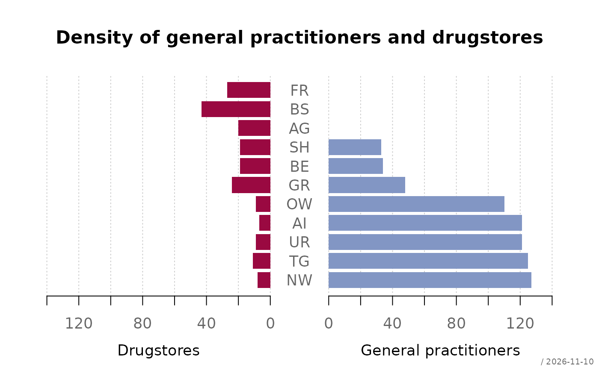
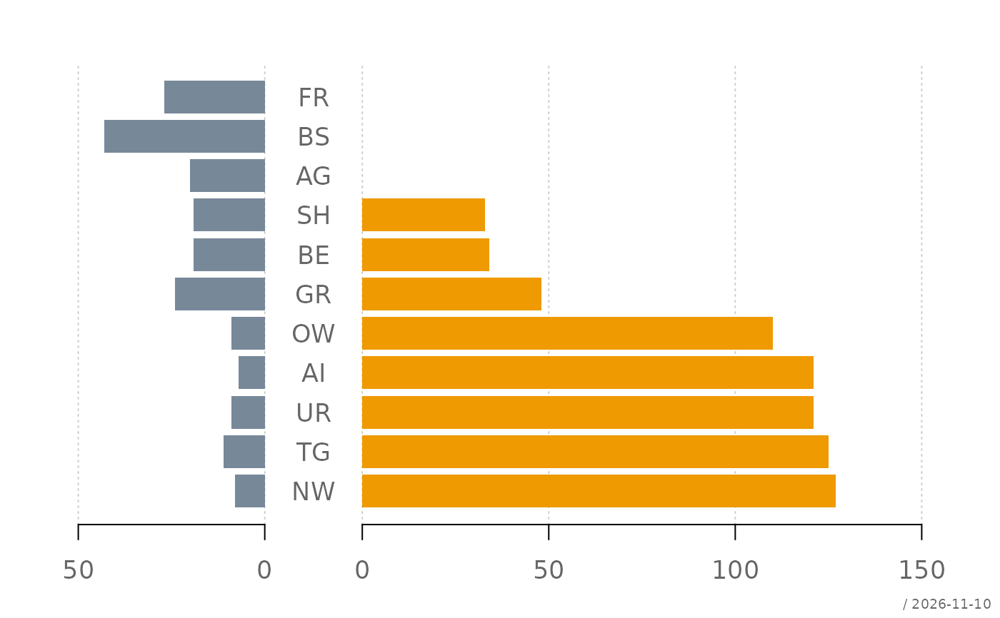
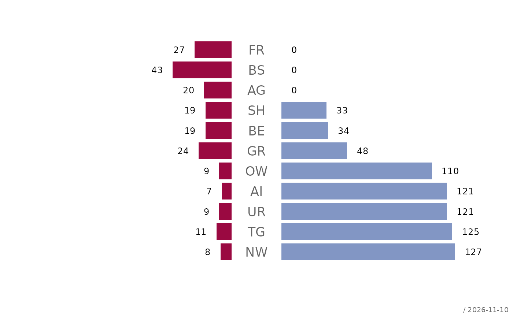
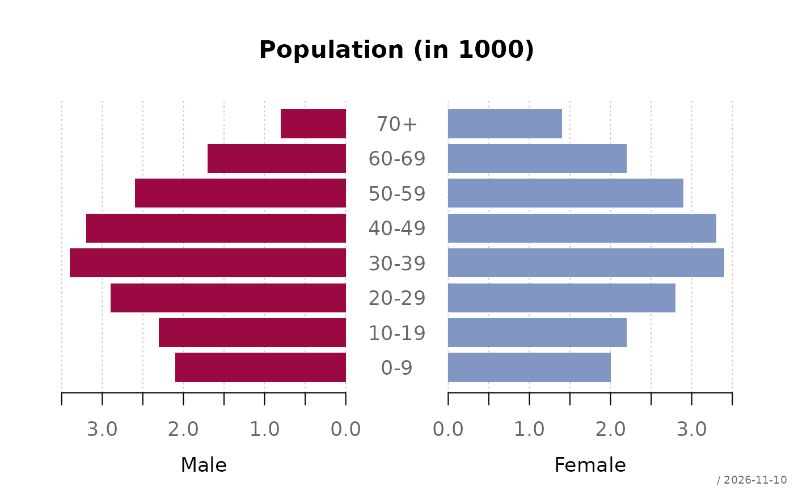
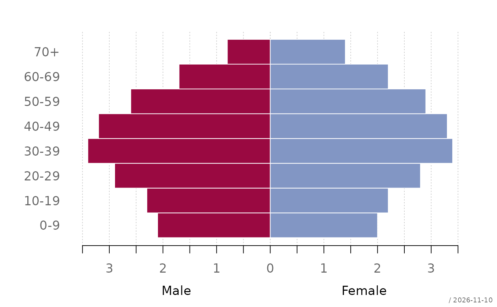
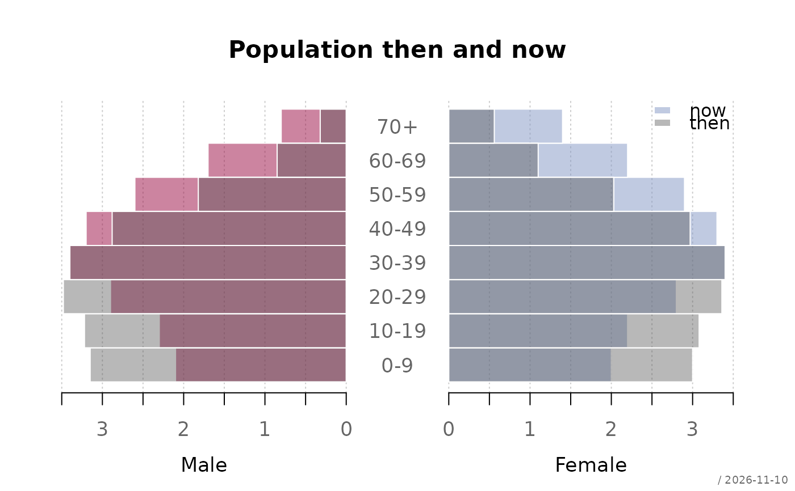

Draws two series of horizontal bars back to back on a common scale, with the category labels in a gap between them. The classic use is the population pyramid; the display is also known as a butterfly chart or back-to-back barplot and serves any comparison of two series over the same categories.
Usage
plotPyramid(
lx,
rx = NULL,
labels = NULL,
main = NULL,
lxlab = NULL,
rxlab = NULL,
xax = NULL,
xlim = NULL,
gap = NULL,
add = FALSE,
col = .useTheme,
border = .useTheme,
grid = .useTheme,
box = FALSE,
text = NULL,
stamp = .useTheme,
...
)Arguments
- lx, rx
numeric vectors of non-negative values for the left and the right half. Alternatively
lxcan be a matrix, table or data frame with two columns, which are then taken as left and right series; the row names serve aslabelsand the column names aslxlabandrxlab.- labels
the category labels.
NULL(default) uses the names oflx(or the row names of a two-columnlx).FALSEorNAsuppress them.- main
main title.
NULL(default) draws none."",NAorFALSEalso suppress it; the top margin is compacted whenever no title is drawn.- lxlab, rxlab
labels for the left and the right half, centered below the respective part of the value axis.
NULL(default) uses the column names of a two-columnlxand draws none otherwise;"",NAorFALSEsuppress a label.- xax
controls drawing of the value axis.
NULL,TRUEdraw the axis using package defaults
FALSEsuppress the axis
list(...)format arguments for
fm()and axis parameters forgraphics::axis(), as foryaxinplotBar()
- xlim
the extent of the value axis: one number for both halves or two numbers,
c(left, right). The scale stays the same on both sides, a larger extent merely gets more room.NULL(default) uses the same pretty limit for both halves.- gap
the width of the gap between the halves, in units of the value axis.
NULL(default) reserves just the room thelabelsneed. Withgap = 0the halves touch and the labels move to the left margin.- add
logical. If
TRUE, only the bars (and theirtext) are added to an existing pyramid plot, e.g. to overlay a second population. Thegapof that plot must then be given, see the return value;spaceandwidthmust be the same as well.- col
the fill colors of the left and the right half, recycled to length 2.
.useTheme(default) resolves togetTheme()$twin. A list of two vectors sets the colors per bar.- border
bar border colour.
.useTheme(default) resolves togetTheme()$bar$border.- grid
controls the vertical grid lines at the axis ticks.
.useTheme(default) follows the active theme (getTheme()$grid),TRUEdraws them with theme settings,FALSE,NULLorNAsuppress them. A named list setscol,lwdandltyfor this call.- box
controls drawing of the plot box.
TRUE/FALSE/NA, the theme via.useTheme, or a named list forgraphics::box().- text
optional list of arguments passed to
barText()to draw value labels on the bars,TRUEfor the defaults (the values, outside the bar ends).labelscan be a list of two vectors, for the left and the right half.- stamp
controls the corner stamp.
.useTheme(default) resolves togetTheme()$stamp.TRUE/FALSE/NULL, or an explicit string, as for.withGraphicsState()(internal).- ...
further arguments:
spaceandwidthare passed tographics::barplot(), graphical parameters such asmar,lasorcex.axisare set viagraphics::par().
Value
Invisibly returns the midpoints of the bars as returned by
graphics::barplot(), with the realized gap width as attribute
"gap". A bar of the right half with value v ends at
gap/2 + v, one of the left half at -gap/2 - v.
Details
Both halves share one coordinate system, so that bar lengths can be
compared across the gap: a unit on the left is as long as a unit on the
right. The left series is drawn towards the left from -gap/2, the
right series towards the right from gap/2. The value axis shows the
unsigned values on both sides.
As in graphics::barplot(), the first category is drawn at the bottom.
See also
Other plot.bivariate:
plotAssoc(),
plotBag(),
plotBubble(),
plotCor(),
plotDens2D(),
plotHeatmap(),
plotHexbin(),
plotMosaic(),
plotXY()
Examples
# two vectors
d.sda <- data.frame(
kt_x = c("NW","TG","UR","AI","OW","GR","BE","SH","AG","BS","FR"),
apo_n = c( 8, 11, 9, 7, 9, 24, 19, 19, 20, 43, 27),
sda_n = c(127, 125, 121, 121, 110, 48, 34, 33, 0, 0, 0)
)
plotPyramid(lx = d.sda$apo_n, rx = d.sda$sda_n, labels = d.sda$kt_x,
lxlab = "Drugstores", rxlab = "General practitioners",
main = "Density of general practitioners and drugstores")

# more room for the longer half, own colors
plotPyramid(lx = d.sda$apo_n, rx = d.sda$sda_n, labels = d.sda$kt_x,
xlim = c(50, 150), col = c("lightslategray", "orange2"))

# values on the bars
plotPyramid(lx = d.sda$apo_n, rx = d.sda$sda_n, labels = d.sda$kt_x,
xax = FALSE, grid = FALSE,
text = list(cex = 0.7, border = NA))

# a two-column table: labels and titles are taken from the dimnames
tab <- cbind(Male = c(2.1, 2.3, 2.9, 3.4, 3.2, 2.6, 1.7, 0.8),
Female = c(2.0, 2.2, 2.8, 3.4, 3.3, 2.9, 2.2, 1.4))
rownames(tab) <- c("0-9", "10-19", "20-29", "30-39", "40-49",
"50-59", "60-69", "70+")
plotPyramid(tab, main = "Population (in 1000)",
xax = list(digits = 1))

# no gap: the labels move to the left margin
plotPyramid(tab, gap = 0, space = 0, border = "white")

# two populations overlaid with semi-transparent bars (made-up numbers)
now <- tab
then <- tab * c(1.5, 1.4, 1.2, 1, 0.9, 0.7, 0.5, 0.4)
cols <- c(addOpacity(getTheme()$twin, 0.5), addOpacity("grey30", 0.4))
r <- plotPyramid(now, xlim = 3.5, space = 0,
col = cols[1:2], border = "white",
main = "Population then and now")
plotPyramid(then, add = TRUE, gap = attr(r, "gap"), space = 0,
col = cols[3], border = "white")
legend("topright", legend = c("now", "then"), fill = cols[c(2, 3)],
border = NA, bty = "n")
